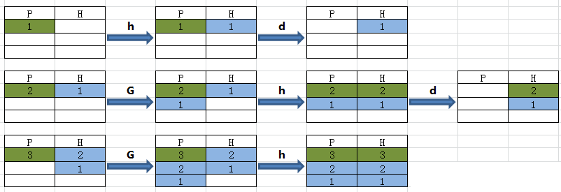

1. cut命令
选项与参数：
-d ：后面接分隔字符。与 -f 一起使用；
-f ：依据 -d 的分隔字符将一段信息分割成为数段，用 -f 取出第几段的意思；
-c ：以字符 (characters) 的单位取出固定字符区间；
cut以行为单位，根据分隔符把行分成若干列，这样就可以指定选取哪些列了。
cut -d '分隔字符' -f 选取的列数
echo $PATH|cut -d ':' -f 2 --选取第2列
echo $PATH|cut -d ':' -f 3,5 --选取第3列和第5列
echo $PATH|cut -d ':' -f 3-5 --选取第3列到第5列
echo $PATH|cut -d ':' -f 3- --选取第3列到最后1列
echo $PATH|cut -d ':' -f 1-3,5 --选取第1到第3列还有第5列
只显示/etc/passwd的用户和shell：
#cat /etc/passwd | cut -d ':' -f 1,7
root:/bin/bash
daemon:/bin/sh
bin:/bin/sh
2. sed命令
sed 可依照脚本的指令来处理、编辑文本文件。
Sed 主要用来自动编辑一个或多个文件、简化对文件的反复操作、编写转换程序等。
语法:
sed [-e<script>][-f<script文件>][文本文件]
参数说明：
-e <script>以指定的script来处理输入的文本文件。-f<script文件>以指定的script文件来处理输入的文本文件。-n仅显示script处理后的结果，一般跟p动作搭配使用。-i使用处理后的结果修改文件。
动作说明：
- a：在指定行后面插入内容
- i：在指定行前面插入内容
- d：删除指定行
- c ：替换指定行
- p ：打印指定行的数据，通常需要跟
-n选项搭配使用 - s ：替换指定字符，兼容vim的替换语法，例如 1,20s/old/new/g
2.1. 元字符集
sed支持一般的正则表达式，下面是支持的正则语法：
^行的开始 如：/^sed/匹配所有以sed开头的行。
$行的结束 如：/sed$/匹配所有以sed结尾的行。
.匹配一个非换行符的任意字符 如：/s.d/匹配s后接一个任意字符，然后是d。
*匹配零或多个字符 如：/sed/匹配所有模板是一个或多个空格后紧跟sed的行。
[]匹配一个指定范围内的字符，如/[Ss]ed/匹配sed和Sed。
[^]匹配一个不在指定范围内的字符，如：/[^A-RT-Z]ed/匹配不包含A-R和T-Z的一个字母开头，紧跟ed的行。
\(..\)保存匹配的字符，如s/(love)able/\1rs，loveable被替换成lovers。
&保存搜索字符用来替换其他字符，如s/love/**&**/，love这成`*love。\<单词的开始，如:/\<love/匹配包含以love开头的单词的行。>单词的结束，如/love\>/匹配包含以love结尾的单词的行。x+重复字符x，至少1次，如：/o+/匹配至少有1个o的行。x{m}重复字符x，m次，如：/o{5}/匹配包含5个o的行。x{m,}重复字符x,至少m次，如：/o{5,}/匹配至少有5个o的行。x{m,n}重复字符x，至少m次，不多于n次，如：/o{5,10}/`匹配5-10个o的行。
2.2. a|i:在指定行位置添加行
python@xxx:~/test$ cat testfile
LINUX!
Linux is a free unix-type opterating system.
This is a linux testfile!
Linux test
python@xxx:~/test$ sed -e 2a\newline testfile
LINUX!
Linux is a free unix-type opterating system.
newline
This is a linux testfile!
Linux test
默认情况下-e参数可以省略：
python@xxx:~/test$ cat testfile|sed '2a\newline'
LINUX!
Linux is a free unix-type opterating system.
newline
This is a linux testfile!
Linux test
python@xxx:~/test$ sed '2a newline' testfile
LINUX!
Linux is a free unix-type opterating system.
newline
This is a linux testfile!
Linux test
<script>中的内容最好用单引号括起来，如果脚本内容不存在空白字符也可以省略单引号。
在第二行之前添加一行：
python@xxx:~/test$ sed '2i newline' testfile
LINUX!
newline
Linux is a free unix-type opterating system.
This is a linux testfile!
Linux test
最后一行加入 # This is a test:
python@xxx:~/test$ sed '$a # This is a test' testfile
LINUX!
Linux is a free unix-type opterating system.
This is a linux testfile!
Linux test
# This is a test
同时添加多行：
python@xxx:~/test$ cat testfile|sed '2a\newline1\
> newline2'
LINUX!
Linux is a free unix-type opterating system.
newline1
newline2
This is a linux testfile!
Linux test
2.3. d:删除指定行
将 /etc/passwd 的内容列出行号，并将第 2~5 行删除！
[root@www ~]# nl /etc/passwd | sed '2,5d'
1 root:x:0:0:root:/root:/bin/bash
6 sync:x:5:0:sync:/sbin:/bin/sync
7 shutdown:x:6:0:shutdown:/sbin:/sbin/shutdown
.....(后面省略).....
只删除第2行：
nl /etc/passwd | sed '2d'
删除第3到最后一行：
nl /etc/passwd | sed '3,$d'
删除/etc/passwd所有包含/usr/sbin/nologin的行，其他行输出：
python@xxx:~/test$ nl /etc/passwd | sed '/\/usr\/sbin\/nologin/d'
1 root:x:0:0:root:/root:/bin/bash
5 sync:x:4:65534:sync:/bin:/bin/sync
19 systemd-timesync:x:100:102:systemd Time Synchronization,,,:/run/systemd:/bin/false
20 systemd-network:x:101:103:systemd Network Management,,,:/run/systemd/netif:/bin/false
....下面忽略
2.4. c:替换指定行
将第2-5行的内容替换成为『No 2-5 number』：
python@xxx:~/test$ nl /etc/passwd | sed '2,5c No 2-5 number'
1 root:x:0:0:root:/root:/bin/bash
No 2-5 number
6 games:x:5:60:games:/usr/games:/usr/sbin/nologin
.....(后面省略).....
2.5. p:仅显示指定行
不加-n选项时，除了输出匹配行，还同时会输出所有行，所以需要加-n选项。
仅列出 /etc/passwd 文件内的第 5-7 行：
python@xxx:~/test$ nl /etc/passwd | sed -n '5,7p'
5 sync:x:4:65534:sync:/bin:/bin/sync
6 games:x:5:60:games:/usr/games:/usr/sbin/nologin
7 man:x:6:12:man:/var/cache/man:/usr/sbin/nologin
搜索 /etc/passwd有root关键字的行：
python@xxx:~/test$ cat /etc/passwd | sed -n '/root/p'
root:x:0:0:root:/root:/bin/bash
python@xxx:~/test$ sed -n '/root/p' /etc/passwd
root:x:0:0:root:/root:/bin/bash
打印/etc/passwd有以root和bin开头之间的行：
python@xxx:~/test$ cat /etc/passwd | sed -n '/^root/,/^bin/p'
root:x:0:0:root:/root:/bin/bash
daemon:x:1:1:daemon:/usr/sbin:/usr/sbin/nologin
bin:x:2:2:bin:/bin:/usr/sbin/nologin
打印从第五行开始到第一个包含以/var/mail开始的行之间的所有行：
python@xxx:~/test$ nl /etc/passwd | sed -n '5,\/var\/mail/p'
5 sync:x:4:65534:sync:/bin:/bin/sync
6 games:x:5:60:games:/usr/games:/usr/sbin/nologin
7 man:x:6:12:man:/var/cache/man:/usr/sbin/nologin
8 lp:x:7:7:lp:/var/spool/lpd:/usr/sbin/nologin
9 mail:x:8:8:mail:/var/mail:/usr/sbin/nologin
2.6. s:字符串替换
语法：
sed 's/要被取代的字串/新的字串/g'
不论什么字符，紧跟着s命令的都被认为是新的分隔符.
sed 's#10#100#g'表示把所有10替换成100，“#”在这里是分隔符，代替了默认的“/”分隔符。
提取本机所有的ip地址：
[root@VM_0_9_centos ~]# ifconfig | grep 'inet '
inet 172.16.0.9 netmask 255.255.240.0 broadcast 172.16.15.255
inet 127.0.0.1 netmask 255.0.0.0
[root@VM_0_9_centos ~]# ifconfig | grep 'inet '|sed 's/^[^0-9]*\([0-9\.]*\).*$/\1/g'
172.16.0.9
127.0.0.1
对于以root和bin开头之间的行，每行的末尾添加sed test：
python@xxx:~/test$ cat /etc/passwd | sed '/^root/,/^bin/s/$/--sed test/'
root:x:0:0:root:/root:/bin/bash--sed test
daemon:x:1:1:daemon:/usr/sbin:/usr/sbin/nologin--sed test
bin:x:2:2:bin:/bin:/usr/sbin/nologin--sed test
sys:x:3:3:sys:/dev:/usr/sbin/nologin
2.7. y:单字符替换
跟s一样也用于替换，不过s替换的是整体，y替换的是每一字母对应的单个字母
把data中的第一行至第三行中的a替换成A，b替换成B，c替换成C：
sed '1,3y/abc/ABC/' data
示例：
python@ubuntu:~/test$ echo "123" | sed 'y/13/34/'
324
python@ubuntu:~/test$ echo "axxbxxcxx" | sed 'y/abc/123/'
1xx2xx3xx
2.8. hHgG模式空间&保持空间
h命令是将当前模式空间中内容覆盖至保持空间，H命令是将当前模式空间中的内容追加至保持空间
g命令是将当前保持空间中内容覆盖至模式空间，G命令是将当前保持空间中的内容追加至模式空间
模拟tac命令：
python@ubuntu:~/test$ cat log.txt
2 this is a test
3 Are you like awk
This's a test
10 There are orange,apple,mongo
python@ubuntu:~/test$ cat log.txt |sed '1!G;h;$!d'
10 There are orange,apple,mongo
This's a test
3 Are you like awk
2 this is a test
1!G第1行不 执行“G”命令，从第2行开始执行。
$!d，最后一行不删除（保留最后1行）
下图P表示模式空间，H代表保持空间：

递增序列：
python@ubuntu:~/test$ seq 3
1
2
3
python@ubuntu:~/test$ seq 3|sed 'H;g'
1
1
2
1
2
3
2.9. 多次指定-e选项进行多点编辑
删除/etc/passwd第三行到末尾的数据，并把bash替换为blueshell：
nl /etc/passwd | sed -e '3,$d' -e 's/bash/blueshell/'
1 root:x:0:0:root:/root:/bin/blueshell
2 daemon:x:1:1:daemon:/usr/sbin:/bin/sh
删除一个文件以#开头的行和空行：
python@xxx:~/test$ nl abc -ba
1
2 b
3 a
4
5 # aaaa
6
7 ddd
8
9 # sss
10 eeee
11
python@xxx:~/test$ sed -e '/^#/d' -e '/^$/d' abc
b
a
ddd
eeee
也可以通过;实现
python@ubuntu:~/test$ nl /etc/passwd | sed '3,$d;s/bash/blueshell/'
1 root:x:0:0:root:/root:/bin/blueshell
2 daemon:x:1:1:daemon:/usr/sbin:/usr/sbin/nologin
python@ubuntu:~/test$ sed '/^#/d;/^$/d' abc
b
a
ddd
eeee
2.10. 选项-i直接修改文件内容
默认情况下sed命令仅仅只是将处理结果显示在控制台，加-i选项则会修改文件内容。
将 regular_express.txt 内每一行结尾若为 . 则换成 !
[root@www ~]# cat regular_express.txt
taobao.
google.
taobao.
facebook.
zhihu-
weibo-
[root@www ~]# sed -i 's/\.$/\!/g' regular_express.txt
[root@www ~]# cat regular_express.txt
taobao!
google!
taobao!
facebook!
zhihu-
weibo-
3. awk命令
AWK是一种处理文本文件的语言，是一个强大的文本分析工具。
之所以叫AWK是因为其取了三位创始人 Alfred Aho，Peter Weinberger, 和 Brian Kernighan 的 Family Name 的首字符。
语法：
awk [选项参数] 'script' var=value file(s)
或
awk [选项参数] -f scriptfile var=value file(s)
选项参数说明：
- -F fs or --field-separator fs 指定输入文件折分隔符，fs是一个字符串或者是一个正则表达式，如-F:。
- -v var=value or --asign var=value 赋值一个用户定义变量。
- -f scripfile or --file scriptfile 从脚本文件中读取awk命令。
3.1. 基本用法
awk '{[pattern] action}' file
每行按空格或TAB分割，输出文本中的1、4列：
python@ubuntu:~/test$ cat log.txt
2 this is a test
3 Are you like awk
This's a test
10 There are orange,apple,mongo
python@ubuntu:~/test$ awk '{print $1,$4}' log.txt
2 a
3 like
This's
10 orange,apple,mongo
格式化输出：
python@ubuntu:~/test$ awk '{printf "%-8s %-10s\n",$1,$4}' log.txt
2 a
3 like
This's
3.1.1. -F指定分割字符
awk -F #-F相当于内置变量FS, 指定分割字符
使用:分割,取/etc/passwd文件每个用户对应shell：
python@ubuntu:~/test$ awk -F: '{print $1,$7}' /etc/passwd
root /bin/bash
daemon /usr/sbin/nologin
bin /usr/sbin/nologin
sys /usr/sbin/nologin
sync /bin/sync
# 或者使用内建变量
python@ubuntu:~/test$ awk 'BEGIN{FS=":"} {print $1,$7}' /etc/passwd
root /bin/bash
daemon /usr/sbin/nologin
bin /usr/sbin/nologin
同时使用:和/l两个分隔符分割/etc/passwd文件
python@ubuntu:~/test$ awk -F '[:\/]' '{print $1,$7}' /etc/passwd
root root
daemon usr
bin bin
3.1.2. -v设置变量
awk -v # 设置变量
例子：
python@ubuntu:~/test$ cat log.txt
2 this is a test
3 Are you like awk
This's a test
10 There are orange,apple,mongo
python@ubuntu:~/test$ awk -va=1 '{print $1,$1+a}' log.txt
2 3
3 4
This's 1
10 11
python@ubuntu:~/test$ awk -va=1 -vb=s '{print $1,$1+a,$1b}' log.txt
2 3 2s
3 4 3s
This's 1 This'ss
10 11 10s
3.1.3. -f指定awk脚本
awk -f {awk脚本} {文件名}
脚本模块：
- BEGIN{ 这里面放的是执行前的语句 }
- END {这里面放的是处理完所有的行后要执行的语句 }
- {这里面放的是处理每一行时要执行的语句}
假设有这么一个文件（学生成绩表）：
$ cat score.txt
Marry 2143 78 84 77
Jack 2321 66 78 45
Tom 2122 48 77 71
Mike 2537 87 97 95
Bob 2415 40 57 62
awk脚本如下：
$ cat cal.awk
#!/bin/awk -f
#运行前
BEGIN {
math = 0
english = 0
computer = 0
printf "NAME NO. MATH ENGLISH COMPUTER TOTAL\n"
printf "---------------------------------------------\n"
}
#运行中
{
math+=$3
english+=$4
computer+=$5
printf "%-6s %-6s %4d %8d %8d %8d\n", $1,$2,$3,$4,$5,$3+$4+$5
}
#运行后
END {
printf "---------------------------------------------\n"
printf " TOTAL:%10d %8d %8d \n", math, english, computer
printf "AVERAGE:%10.2f %8.2f %8.2f\n", math/NR, english/NR, computer/NR
}
我们来看一下执行结果：
$ awk -f cal.awk score.txt
NAME NO. MATH ENGLISH COMPUTER TOTAL
---------------------------------------------
Marry 2143 78 84 77 239
Jack 2321 66 78 45 189
Tom 2122 48 77 71 196
Mike 2537 87 97 95 279
Bob 2415 40 57 62 159
---------------------------------------------
TOTAL: 319 393 350
AVERAGE: 63.80 78.60 70.00
3.2. AWK工作原理
AWK 工作流程可分为三个部分：
- 读输入文件之前执行的代码段（由BEGIN关键字标识）。
- 主循环执行输入文件的代码段。
- 读输入文件之后的代码段（由END关键字标识）。
命令结构:
awk 'BEGIN{ commands } pattern{ commands } END{ commands }'
下面的流程图描述出了 AWK 的工作流程：

- 1、通过关键字 BEGIN 执行 BEGIN 块的内容，即 BEGIN 后花括号 {} 的内容。
- 2、完成 BEGIN 块的执行，开始执行body块。
- 3、读入有 \n 换行符分割的记录。
- 4、将记录按指定的域分隔符划分域，填充域，$0 则表示所有域(即一行内容)，$1 表示第一个域，$n 表示第 n 个域。
- 5、依次执行各 BODY 块，pattern 部分匹配该行内容成功后，才会执行 awk-commands 的内容。
- 6、循环读取并执行各行直到文件结束，完成body块执行。
- 7、开始 END 块执行，END 块可以输出最终结果。
3.3. 运算符
| 运算符 | 描述 | ||
|---|---|---|---|
| = += -= = /= %= ^= *= | 赋值 | ||
| ?: | C条件表达式 | ||
| \ | \ | 逻辑或 | |
| && | 逻辑与 | ||
| ~ 和 !~ | 匹配正则表达式和不匹配正则表达式 | ||
| < <= > >= != == | 关系运算符 | ||
| 空格 | 连接 | ||
| + - | 加，减 | ||
| * / % | 乘，除与求余 | ||
| + - ! | 一元加，减和逻辑非 | ||
| ^ * | 求幂 | ||
| ++ -- | 增加或减少，作为前缀或后缀 | ||
| $ | 字段引用 | ||
| in | 数组成员 |
3.3.1. 过滤第一列大于2的行
$ awk '$1>2' log.txt #命令
3 Are you like awk
This's a test
10 There are orange,apple,mongo
3.3.2. 过滤第一列等于2的行
$ awk '$1==2 {print $1,$3}' log.txt #命令
#输出
2 is
3.3.3. 过滤第一列大于2并且第二列等于'Are'的行
$ awk '$1>2 && $2=="Are" {print $1,$2,$3}' log.txt #命令
#输出
3 Are you
3.4. 内建变量
| 变量 | 描述 |
|---|---|
| $n | 当前记录的第n个字段，字段间由FS分隔 |
| $0 | 完整的输入记录 |
| ARGC | 命令行参数的数目 |
| ARGIND | 命令行中当前文件的位置(从0开始算) |
| ARGV | 包含命令行参数的数组 |
| CONVFMT | 数字转换格式(默认值为%.6g)ENVIRON环境变量关联数组 |
| ERRNO | 最后一个系统错误的描述 |
| FIELDWIDTHS | 字段宽度列表(用空格键分隔) |
| FILENAME | 当前文件名 |
| FNR | 各文件分别计数的行号 |
| FS | 字段分隔符(默认是任何空格) |
| IGNORECASE | 如果为真，则进行忽略大小写的匹配 |
| NF | 一条记录的字段的数目 |
| NR | 已经读出的记录数，就是行号，从1开始 |
| OFMT | 数字的输出格式(默认值是%.6g) |
| OFS | 输出记录分隔符（输出换行符），输出时用指定的符号代替换行符 |
| ORS | 输出记录分隔符(默认值是一个换行符) |
| RLENGTH | 由match函数所匹配的字符串的长度 |
| RS | 记录分隔符(默认是一个换行符) |
| RSTART | 由match函数所匹配的字符串的第一个位置 |
| SUBSEP | 数组下标分隔符(默认值是/034) |
格式化变量说明：
%s 输出字符串 %i 输出整数 %f 输出浮点数
%-5s 格式为左对齐且宽度为5的字符串代替（-表示左对齐），不使用则是又对齐。 %-4.2f 格式为左对齐宽度为4，保留两位小数。
python@ubuntu:~/test$ awk 'BEGIN{printf "%4s %4s %4s %4s %4s %4s %4s %4s %4s\n","FILENAME","ARGC","FNR","FS","NF","NR","OFS","ORS","RS";printf "---------------------------------------------\n"} {printf "%4s %4s %4s %4s %4s %4s %4s %4s %4s\n",FILENAME,ARGC,FNR,FS,NF,NR,OFS,ORS,RS}' log.txt
FILENAME ARGC FNR FS NF NR OFS ORS RS
---------------------------------------------
log.txt 2 1 5 1
log.txt 2 2 5 2
log.txt 2 3 3 3
log.txt 2 4 4 4
python@ubuntu:~/test$ awk -F: 'BEGIN{printf "%4s %4s %4s %4s %4s %4s %4s %4s %4s\n","FILENAME","ARGC","FNR","FS","NF","NR","OFS","ORS","RS";printf "---------------------------------------------\n"} {printf "%4s %4s %4s %4s %4s %4s %4s %4s %4s\n",FILENAME,ARGC,FNR,FS,NF,NR,OFS,ORS,RS}' log.txt
FILENAME ARGC FNR FS NF NR OFS ORS RS
---------------------------------------------
log.txt 2 1 : 1 1
log.txt 2 2 : 1 2
log.txt 2 3 : 1 3
log.txt 2 4 : 1 4
3.4.1. 输出顺序号 NR, 匹配文本行号
python@ubuntu:~/test$ awk '{print NR,FNR,$1,$2,$3}' log.txt
1 1 2 this is
2 2 3 Are you
3 3 This's a test
4 4 10 There are
3.4.2. 指定输出分割符
python@ubuntu:~/test$ cat log.txt
2 this is a test
3 Are you like awk
This's a test
10 There are orange,apple,mongo
python@ubuntu:~/test$ awk '{print $1,$2,$5}' OFS=" $ " log.txt
2 $ this $ test
3 $ Are $ awk
This's $ a $
10 $ There $
3.4.3. 忽略大小写
$ awk 'BEGIN{IGNORECASE=1} /this/' log.txt
---------------------------------------------
2 this is a test
This's a test
3.5. 正则字符串匹配
~ 表示模式开始。// 中是模式。
输出第二列包含 "th"，并打印第二列与第四列：
python@ubuntu:~/test$ awk '$2 ~ /th/ {print $2,$4}' log.txt
this a
输出包含"re"的行：
python@ubuntu:~/test$ awk '/re/' log.txt
3 Are you like awk
10 There are orange,apple,mongo
!表示取反
输出第二列不包含 "th"，并打印第二列与第四列：
python@ubuntu:~/test$ awk '$2 !~ /th/ {print $2,$4}' log.txt
Are like
a
There orange,apple,mongo
输出不包含"re"的行：
python@ubuntu:~/test$ awk '!/re/' log.txt
2 this is a test
This's a test
3.6. 一些实例
3.6.1. 计算文件大小
$ ls -l *.txt | awk '{sum+=$6} END {print sum}'
--------------------------------------------------
666581
3.6.2. 从文件中找出长度大于80的行
awk 'length>80' log.txt
3.6.3. 打印九九乘法表
seq 9 | sed 'H;g' | awk -v RS='' '{for(i=1;i<=NF;i++)printf("%dx%d=%d%s", i, NR, i*NR, i==NR?"\n":"\t")}'
3.6.4. 访问日志分析
日志格式
python@ubuntu:~/test$ head access.log -n1
42.236.10.75 "changtou.xiaoxiaoming.xyz" [14/Oct/2019:12:47:18 +0800] "GET /logo/8@3x.png HTTP/1.1" 200 26053 "https://changtou.xiaoxiaoming.xyz/" "Mozilla/5.0 (Linux; U; Android 8.1.0; zh-CN; EML-AL00 Build/HUAWEIEML-AL00) AppleWebKit/537.36 (KHTML, like Gecko) Version/4.0 Chrome/57.0.2987.108 baidu.sogo.uc.UCBrowser/11.9.4.974 UWS/2.13.1.48 Mobile Safari/537.36 AliApp(DingTalk/4.5.11) com.alibaba.android.rimet/10487439 Channel/227200 language/zh-CN" "42.236.10.75" rt="0.000" uct="-" uht="-" urt="-"
示例：
1.数据清洗
awk '($6 ~ /.html/) && ($8 ~ /200/) {print $0}' access.log > clean.log
2.统计PV
python@ubuntu:~/test$ awk '{print $0}' clean.log | wc -l
700
python@ubuntu:~/test$ cut -d ' ' -f 1 clean.log|wc -l
700
3:UV
python@ubuntu:~/test$ awk '{print $1}' clean.log |sort|uniq| wc -l
155
python@ubuntu:~/test$ cut -d ' ' -f 1 clean.log|sort|uniq| wc -l
155
4:获取每天访问网站最多的前10名用户
awk '{print $1}' clean.log|sort|uniq -c|sort -k 1nr|head
或
cut -d ' ' -f 1 clean.log|sort|uniq -c|sort -k 1nr|head
4. awk编程
4.1. 条件语句IF&ELSE
IF 条件语句语法格式如下：
if (condition)
action
也可以使用花括号来执行一组操作：
if (condition)
{
action-1
action-1
.
.
action-n
}
判断数字是奇数还是偶数：
python@ubuntu:~/test$ awk 'BEGIN {num = 10; if (num % 2 == 0) printf "%d 是偶数\n", num }'
10 是偶数
IF - ELSE 条件语句语法格式如下：
if (condition)
action-1
else
action-2
在条件语句 condition 为 true 时只需 action-1，否则执行 action-2。
python@ubuntu:~/test$ awk 'BEGIN {
> num = 11;
> if (num % 2 == 0) printf "%d 是偶数\n", num;
> else printf "%d 是奇数\n", num
> }'
11 是奇数
python@ubuntu:~/test$ awk 'BEGIN {num = 11; if (num % 2 == 0) printf "%d 是偶数\n", num; else printf "%d 是奇数\n", num }'
11 是奇数
可以创建多个 IF - ELSE 格式的判断语句来实现多个条件的判断：
$ awk 'BEGIN {
a=30;
if (a==10)
print "a = 10";
else if (a == 20)
print "a = 20";
else if (a == 30)
print "a = 30";
}'
输出结果：
python@ubuntu:~/test$ awk 'BEGIN {
> a=30;
> if (a==10)
> print "a = 10";
> else if (a == 20)
> print "a = 20";
> else if (a == 30)
> print "a = 30";
> }'
a = 30
4.2. 循环语句For&While
For 循环的语法如下：
for (initialisation; condition; increment/decrement)
action
下面的例子使用 For 循环输出数字 1 至 5：
python@ubuntu:~/test$ awk 'BEGIN { for (i = 1; i <= 5; ++i) print i }'
1
2
3
4
5
While 循环的语法如下：
while (condition)
action
下面是使用 While 循环输出数字 1 到 5 的例子：
python@ubuntu:~/test$ awk 'BEGIN {i = 1; while (i < 6) { print i; ++i } }'
1
2
3
4
5
在下面的示例子中，当计算的和大于 50 的时候使用 break 结束循环：
$ awk 'BEGIN {
sum = 0; for (i = 0; i < 20; ++i) {
sum += i; if (sum > 50) break; else print "Sum =", sum
}
}'
输出结果为：
python@ubuntu:~/test$ awk 'BEGIN {
> sum = 0; for (i = 0; i < 20; ++i) {
> sum += i; if (sum > 50) break; else print "Sum =", sum
> }
> }'
Sum = 0
Sum = 1
Sum = 3
Sum = 6
Sum = 10
Sum = 15
Sum = 21
Sum = 28
Sum = 36
Sum = 45
Continue 语句用于在循环体内部结束本次循环，从而直接进入下一次循环迭代。
下面的例子输出 1 到 20 之间的偶数：
python@ubuntu:~/test$ awk 'BEGIN {for (i = 1; i <= 20; ++i) {if (i % 2 == 0) print i ; else continue} }'
2
4
6
8
10
12
14
16
18
20
Exit 用于结束脚本程序的执行。
该函数接受一个整数作为参数表示 AWK 进程结束状态。 如果没有提供该参数，其默认状态为 0。
下面例子中当和大于 50 时结束 AWK 程序。
$ awk 'BEGIN {
sum = 0; for (i = 0; i < 20; ++i) {
sum += i; if (sum > 50) exit(10); else print "Sum =", sum
}
}'
输出结果为：
python@ubuntu:~/test$ awk 'BEGIN {
> sum = 0; for (i = 0; i < 20; ++i) {
> sum += i; if (sum > 50) exit(10); else print "Sum =", sum
> }
> }'
Sum = 0
Sum = 1
Sum = 3
Sum = 6
Sum = 10
Sum = 15
Sum = 21
Sum = 28
Sum = 36
Sum = 45
python@ubuntu:~/test$ echo $?
10
4.3. awk数组
AWK的数组底层数据结构是散列表，索引可以是数字或字符串。
数组使用的语法格式：
array_name[index]=value
创建数组并访问数组元素：
$ awk 'BEGIN {
sites["taobao"]="www.taobao.com";
sites["google"]="www.google.com"
print sites["taobao"] "\n" sites["google"]
}'
删除数组元素语法格式：
delete array_name[index]
下面的例子中，数组中的 google 元素被删除（删除命令没有输出）：
$ awk 'BEGIN {
sites["taobao"]="www.taobao.com";
sites["google"]="www.google.com"
delete sites["google"];
print sites["google"]
}'
AWK 本身不支持多维数组，不过我们可以很容易地使用一维数组模拟实现多维数组。
如下示例为一个 3x3 的三维数组：
100 200 300
400 500 600
700 800 900
以上实例中，array[0][0] 存储 100，array[0][1] 存储 200 ，依次类推。为了在 array[0][0] 处存储 100, 可以使用字符串0,0 作为索引： array["0,0"] = 100。
下面是模拟二维数组的例子：
$ awk 'BEGIN {
array["0,0"] = 100;
array["0,1"] = 200;
array["0,2"] = 300;
array["1,0"] = 400;
array["1,1"] = 500;
array["1,2"] = 600;
# 输出数组元素
print "array[0,0] = " array["0,0"];
print "array[0,1] = " array["0,1"];
print "array[0,2] = " array["0,2"];
print "array[1,0] = " array["1,0"];
print "array[1,1] = " array["1,1"];
print "array[1,2] = " array["1,2"];
}'
执行上面的命令可以得到如下结果：
array[0,0] = 100
array[0,1] = 200
array[0,2] = 300
array[1,0] = 400
array[1,1] = 500
array[1,2] = 600
在数组上可以执行很多操作，比如，使用 asort 完成数组元素的排序，或者使用 asorti 实现数组索引的排序等等。
4.4. AWK 用户自定义函数
自定义函数的语法格式为：
function function_name(argument1, argument2, ...)
{
function body
}
以下实例实现了两个简单函数，它们分别返回两个数值中的最小值和最大值。
文件 functions.awk 代码如下：
# 返回最小值
function find_min(num1, num2)
{
if (num1 < num2)
return num1
return num2
}
# 返回最大值
function find_max(num1, num2)
{
if (num1 > num2)
return num1
return num2
}
# 主函数
function main(num1, num2)
{
# 查找最小值
result = find_min(10, 20)
print "Minimum =", result
# 查找最大值
result = find_max(10, 20)
print "Maximum =", result
}
# 脚本从这里开始执行
BEGIN {
main(10, 20)
}
执行 functions.awk 文件，可以得到如下的结果：
$ awk -f functions.awk
Minimum = 10
Maximum = 20
4.5. AWK 内置函数
AWK 内置函数主要有以下几种：
- 算数函数
- 字符串函数
- 时间函数
- 位操作函数
- 其它函数
4.5.1. 算数函数
| 函数名 | 说明 | 实例 |
|---|---|---|
| atan2( y, x ) | 返回 y/x 的反正切。 | $ awk 'BEGIN { PI = 3.14159265 x = -10 y = 10 result = atan2 (y,x) * 180 / PI; printf "The arc tangent for (x=%f, y=%f) is %f degrees\n", x, y, result }'输出结果为：The arc tangent for (x=-10.000000, y=10.000000) is 135.000000 degrees |
| cos( x ) | 返回 x 的余弦；x 是弧度。 | $ awk 'BEGIN { PI = 3.14159265 param = 60 result = cos(param * PI / 180.0); printf "The cosine of %f degrees is %f.\n", param, result }'输出结果为：The cosine of 60.000000 degrees is 0.500000. |
| sin( x ) | 返回 x 的正弦；x 是弧度。 | $ awk 'BEGIN { PI = 3.14159265 param = 30.0 result = sin(param * PI /180) printf "The sine of %f degrees is %f.\n", param, result }'输出结果为：The sine of 30.000000 degrees is 0.500000. |
| exp( x ) | 返回 x 幂函数。 | $ awk 'BEGIN { param = 5 result = exp(param); printf "The exponential value of %f is %f.\n", param, result }'输出结果为：The exponential value of 5.000000 is 148.413159. |
| log( x ) | 返回 x 的自然对数。 | $ awk 'BEGIN { param = 5.5 result = log (param) printf "log(%f) = %f\n", param, result }'输出结果为：log(5.500000) = 1.704748 |
| sqrt( x ) | 返回 x 平方根。 | $ awk 'BEGIN { param = 1024.0 result = sqrt(param) printf "sqrt(%f) = %f\n", param, result }'输出结果为：sqrt(1024.000000) = 32.000000 |
| int( x ) | 返回 x 的截断至整数的值。 | $ awk 'BEGIN { param = 5.12345 result = int(param) print "Truncated value =", result }'输出结果为：Truncated value = 5 |
| rand( ) | 返回任意数字 n，其中 0 <= n < 1。 | $ awk 'BEGIN { print "Random num1 =" , rand() print "Random num2 =" , rand() print "Random num3 =" , rand() }'输出结果为：Random num1 = 0.237788 Random num2 = 0.291066 Random num3 = 0.845814 |
| srand( [Expr] ) | 将 rand 函数的种子值设置为 Expr 参数的值，或如果省略 Expr 参数则使用某天的时间。返回先前的种子值。 | $ awk 'BEGIN { param = 10 printf "srand() = %d\n", srand() printf "srand(%d) = %d\n", param, srand(param) }'输出结果为：srand() = 1 srand(10) = 1417959587 |
4.5.2. 字符串函数
| 函数 | 说明 | 实例 |
|---|---|---|
| gsub( Ere, Repl, [ In ] ) | gsub 是全局替换( global substitution )的缩写。除了正则表达式所有具体值被替代这点，它和 sub 函数完全一样地执行。 | $ awk 'BEGIN { str = "Hello, World" print "String before replacement = " str gsub("World", "Jerry", str) print "String after replacement = " str }'输出结果为：String before replacement = Hello, World String after replacement = Hello, Jerry |
| sub(regex,sub,string) | sub 函数执行一次子串替换。它将第一次出现的子串用 regex 替换。第三个参数是可选的，默认为 $0。 | $ awk 'BEGIN { str = "Hello, World" print "String before replacement = " str sub("World", "Jerry", str) print "String after replacement = " str }'输出结果为：String before replacement = Hello, World String after replacement = Hello, Jerry |
| substr(str, start, l) | substr 函数返回 str 字符串中从第 start 个字符开始长度为 l 的子串。如果没有指定 l 的值，返回 str 从第 start 个字符开始的后缀子串。 | $ awk 'BEGIN { str = "Hello, World !!!" subs = substr(str, 1, 5) print "Substring = " subs }'输出结果为：Substring = Hello |
| index( String1, String2 ) | 在由 String1 参数指定的字符串（其中有出现 String2 指定的参数）中，返回位置，从 1 开始编号。如果 String2 参数不在 String1 参数中出现，则返回 0（零）。 | $ awk 'BEGIN { str = "One Two Three" subs = "Two" ret = index(str, subs) printf "Substring \"%s\" found at %d location.\n", subs, ret }'输出结果为：Substring "Two" found at 5 location. |
| length [(String)] | 返回 String 参数指定的字符串的长度（字符形式）。如果未给出 String 参数，则返回整个记录的长度（$0 记录变量）。 | $ awk 'BEGIN { str = "Hello, World !!!" print "Length = ", length(str) }'输出结果为：Substring "Two" found at 5 location. |
| blength [(String)] | 返回 String 参数指定的字符串的长度（以字节为单位）。如果未给出 String 参数，则返回整个记录的长度（$0 记录变量）。 | |
| substr( String, M, [ N ] ) | 返回具有 N 参数指定的字符数量子串。子串从 String 参数指定的字符串取得，其字符以 M 参数指定的位置开始。M 参数指定为将 String 参数中的第一个字符作为编号 1。如果未指定 N 参数，则子串的长度将是 M 参数指定的位置到 String 参数的末尾 的长度。 | $ awk 'BEGIN { str = "Hello, World !!!" subs = substr(str, 1, 5) print "Substring = " subs }'输出结果为：Substring = Hello |
| match( String, Ere ) | 在 String 参数指定的字符串（Ere 参数指定的扩展正则表达式出现在其中）中返回位置（字符形式），从 1 开始编号，或如果 Ere 参数不出现，则返回 0（零）。RSTART 特殊变量设置为返回值。RLENGTH 特殊变量设置为匹配的字符串的长度，或如果未找到任何匹配，则设置为 -1（负一）。 | $ awk 'BEGIN { str = "One Two Three" subs = "Two" ret = match(str, subs) printf "Substring \"%s\" found at %d location.\n", subs, ret }'输出结果为：Substring "Two" found at 5 location. |
| split( String, A, [Ere] ) | 将 String 参数指定的参数分割为数组元素 A[1], A[2], . . ., A[n]，并返回 n 变量的值。此分隔可以通过 Ere 参数指定的扩展正则表达式进行，或用当前字段分隔符（FS 特殊变量）来进行（如果没有给出 Ere 参数）。除非上下文指明特定的元素还应具有一个数字值，否则 A 数组中的元素用字符串值来创建。 | $ awk 'BEGIN { str = "One,Two,Three,Four" split(str, arr, ",") print "Array contains following values" for (i in arr) { print arr[i] } }'输出结果为：Array contains following values One Two Three Four |
| tolower( String ) | 返回 String 参数指定的字符串，字符串中每个大写字符将更改为小写。大写和小写的映射由当前语言环境的 LC_CTYPE 范畴定义。 | $ awk 'BEGIN { str = "HELLO, WORLD !!!" print "Lowercase string = " tolower(str) }'输出结果为：Lowercase string = hello, world !!! |
| toupper( String ) | 返回 String 参数指定的字符串，字符串中每个小写字符将更改为大写。大写和小写的映射由当前语言环境的 LC_CTYPE 范畴定义。 | $ awk 'BEGIN { str = "hello, world !!!" print "Uppercase string = " toupper(str) }'输出结果为：Uppercase string = HELLO, WORLD !!! |
| sprintf(Format, Expr, Expr, . . . ) | 根据 Format 参数指定的 printf 子例程格式字符串来格式化 Expr 参数指定的表达式并返回最后生成的字符串。 | $ awk 'BEGIN { str = sprintf("%s", "Hello, World !!!") print str }'输出结果为：Hello, World !!! |
| strtonum(str) | strtonum 将字符串 str 转换为数值。 如果字符串以 0 开始，则将其当作十进制数；如果字符串以 0x 或 0X 开始，则将其当作十六进制数；否则，将其当作浮点数。 | $ awk 'BEGIN { print "Decimal num = " strtonum("123") print "Octal num = " strtonum("0123") print "Hexadecimal num = " strtonum("0x123") }'输出结果为：Decimal num = 123 Octal num = 83 Hexadecimal num = 291 |
注：**Ere** 部分可以是正则表达式。
1、gsub、sub 使用
$ awk 'BEGIN{info="this is a test2012test!";gsub(/[0-9]+/,"||",info);print info}'
this is a test||test!
2、查找字符串（index 使用）
使用了三元运算符: 表达式 ? 动作1 : 动作2
$ awk 'BEGIN{info="this is a test2012test!";print index(info,"11111")?"ok":"no found";}'
no found
$ awk 'BEGIN{info="this is a test2012test!";print index(info,"is")?"ok":"no found";}'
ok
$ awk 'BEGIN{info="this is a test2012test!";print index(info,"test")?"ok":"no found";}'
ok
3、正则表达式匹配查找(match 使用）
$ awk 'BEGIN{info="this is a test2012test!";print match(info,/[0-9]+/)?"ok":"no found";}'
ok
4、截取字符串(substr使用）
从第 4 个 字符开始，截取 10 个长度字符串。
$ awk 'BEGIN{info="this is a test2012test!";print substr(info,4,10);}'
s is a tes
5、字符串分割（split使用）
$ awk 'BEGIN{info="this is a test";split(info,tA," ");print length(tA);for(k in tA){print k,tA[k];}}'
4
2 is
3 a
4 test
1 this
分割 info，将 info 字符串使用空格切分为动态数组 tA。注意 awk for …in 循环，是一个无序的循环。 并不是从数组下标 1…n ，因此使用时候需要特别注意。
4.5.3. 时间函数
| 函数名 | 说明 | 实例 |
|---|---|---|
| mktime( YYYY MM DD HH MM SS[ DST]) | 生成时间格式 | $ awk 'BEGIN { print "Number of seconds since the Epoch = " mktime("2014 12 14 30 20 10") }'输出结果为：Number of seconds since the Epoch = 1418604610 |
| strftime([format [, timestamp]]) | 格式化时间输出，将时间戳转为时间字符串 具体格式，见下表. | $ awk 'BEGIN { print strftime("Time = %m/%d/%Y %H:%M:%S", systime()) }'输出结果为：Time = 12/14/2014 22:08:42 |
| systime() | 得到时间戳,返回从1970年1月1日开始到当前时间(不计闰年)的整秒数 | awk 'BEGIN{now=systime();print now}'输出结果为：1343210982 |
strftime 日期和时间格式说明符:
| 序号 | 描述 |
|---|---|
| %a | 星期缩写(Mon-Sun)。 |
| %A | 星期全称（Monday-Sunday）。 |
| %b | 月份缩写（Jan）。 |
| %B | 月份全称（January）。 |
| %c | 本地日期与时间。 |
| %C | 年份中的世纪部分，其值为年份整除100。 |
| %d | 十进制日期(01-31) |
| %D | 等价于 %m/%d/%y. |
| %e | 日期，如果只有一位数字则用空格补齐 |
| %F | 等价于 %Y-%m-%d，这也是 ISO 8601 标准日期格式。 |
| %g | ISO8610 标准周所在的年份模除 100（00-99)。比如，1993 年 1 月 1 日属于 1992 年的第 53 周。所以，虽然它是 1993 年第 1 天，但是其 ISO8601 标准周所在年份却是 1992。同样，尽管 1973 年 12 月 31 日属于 1973 年但是它却属于 1994 年的第一周。所以 1973 年 12 月 31 日的 ISO8610 标准周所在的年是 1974 而不是 1973。 |
| %G | ISO 标准周所在年份的全称。 |
| %h | 等价于 %b. |
| %H | 用十进制表示的 24 小时格式的小时(00-23) |
| %I | 用十进制表示的 12 小时格式的小时（00-12） |
| %j | 一年中的第几天（001-366） |
| %m | 月份（01-12） |
| %M | 分钟数（00-59) |
| %n | 换行符 (ASCII LF) |
| %p | 十二进制表示法（AM/PM） |
| %r | 十二进制表示法的时间（等价于 %I:%M:%S %p）。 |
| %R | 等价于 %H:%M。 |
| %S | 时间的秒数值（00-60） |
| %t | 制表符 (tab) |
| %T | 等价于 %H:%M:%S。 |
| %u | 以数字表示的星期(1-7),1 表示星期一。 |
| %U | 一年中的第几个星期（第一个星期天作为第一周的开始），00-53 |
| %V | 一年中的第几个星期（第一个星期一作为第一周的开始），01-53。 |
| %w | 以数字表示的星期（0-6），0表示星期日 。 |
| %W | 十进制表示的一年中的第几个星期（第一个星期一作为第一周的开始），00-53。 |
| %x | 本地日期表示 |
| %X | 本地时间表示 |
| %y | 年份模除 100。 |
| %Y | 十进制表示的完整年份。 |
| %z | 时区，表示格式为+HHMM（例如，格式要求生成的 RFC 822或者 RFC 1036 时间头） |
| %Z | 时区名称或缩写，如果时区待定则无输出。 |
4.5.4. 位操作函数
| 函数名 | 说明 | 实例 |
|---|---|---|
| and | 位与操作。 | $ awk 'BEGIN { num1 = 10 num2 = 6 printf "(%d AND %d) = %d\n", num1, num2, and(num1, num2) }'输出结果为：(10 AND 6) = 2 |
| compl | 按位求补。 | $ awk 'BEGIN { num1 = 10 printf "compl(%d) = %d\n", num1, compl(num1) }'输出结果为：compl(10) = 9007199254740981 |
| lshift | 左移位操作 | $ awk 'BEGIN { num1 = 10 printf "lshift(%d) by 1 = %d\n", num1, lshift(num1, 1) }'输出结果为：lshift(10) by 1 = 20 |
| rshift | 右移位操作 | $ awk 'BEGIN { num1 = 10 printf "rshift(%d) by 1 = %d\n", num1, rshift(num1, 1) }'输出结果为：rshift(10) by 1 = 5 |
| or | 按位或操作 | $ awk 'BEGIN { num1 = 10 num2 = 6 printf "(%d OR %d) = %d\n", num1, num2, or(num1, num2) }'输出结果为：(10 OR 6) = 14 |
| xor | 按位异或操作 | $ awk 'BEGIN { num1 = 10 num2 = 6 printf "(%d XOR %d) = %d\n", num1, num2, xor(num1, num2) }'输出结果为：(10 bitwise xor 6) = 12 |
4.5.5. 其他函数
| 函数名 | 说明 | 实例 | ||||
|---|---|---|---|---|---|---|
| close(expr) | 关闭管道的文件 | `$ awk 'BEGIN { cmd = "tr [a-z] [A-Z]" print "hello, world !!!" | & cmd close(cmd, "to") cmd | & getline out print out; close(cmd); }'输出结果为：HELLO, WORLD !!!`第一条语句 cmd = "tr [a-z] [A-Z]" 在 AWK 中建立了一个双向的通信通道。第二条语句 print 为 tr 命令提供输入。&\ |
表示双向通信。第三条语句 close(cmd, "to") 完成执行后关闭 to 进程。第四条语句 cmd \ | & getline out 使用 getline 函数将输出存储到 out 变量中。接下来的输出语句打印输出的内容，最后 close 函数关闭 cmd。 |
| delete | 用于从数组中删除元素 | $ awk 'BEGIN { arr[0] = "One" arr[1] = "Two" arr[2] = "Three" arr[3] = "Four" print "Array elements before delete operation:" for (i in arr) { print arr[i] } delete arr[0] delete arr[1] print "Array elements after delete operation:" for (i in arr) { print arr[i] } }'输出结果为：Array elements before delete operation: One Two Three Four Array elements after delete operation: Three Four |
||||
| exit | 终止脚本执行，它可以接受可选的参数 expr 传递 AWK 返回状态。 | $ awk 'BEGIN { print "Hello, World !!!" exit 10 print "AWK never executes this statement." }'输出结果为：Hello, World !!! |
||||
| flush | 刷新打开文件或管道的缓冲区 | |||||
| getline | 读入下一行 | 使用 getline 从文件 marks.txt 中读入一行并输出：$ awk '{getline; print $0}' marks.txt，AWK 从文件 marks.txt 中读入一行存储到变量 0 中。在下一条语句中，我们使用 getline 读入下一行。因此AWK读入第二行并存储到 0 中。最后，AWK 使用 print 输出第二行的内容。这个过程一直到文件结束。 |
||||
| next | 停止处理当前记录，并且进入到下一条记录的处理过程。 | 当模式串匹配成功后程序并不执行任何操作：$ awk '{if ($0 ~/Shyam/) next; print $0}' marks.txt |
||||
| nextfile | 停止处理当前文件，从下一个文件第一个记录开始处理。 | 首先创建两个文件。 file1.txt 内容如下:file1:str1 file1:str2 file1:str3 file1:str4文件 file2.txt 内容如下：file2:str1 file2:str2 file2:str3 file2:str4现在我们来测试 nextfile 函数。$ awk '{ if ($0 ~ /file1:str2/) nextfile; print $0 }' file1.txt file2.txt输出结果为：file1:str1 file2:str1 file2:str2 file2:str3 file2:str4 |
||||
| return | 从用户自定义的函数中返回值。请注意，如果没有指定返回值，那么的返回值是未定义的。 | 创建文件 functions.awk，内容如下：function addition(num1, num2) { result = num1 + num2 return result } BEGIN { res = addition(10, 20) print "10 + 20 = " res }执行该文件：$ awk -f functions.awk 10 + 20 = 30 |
||||
| system | 执行特定的命令然后返回其退出状态。返回值为 0 表示命令执行成功；非 0 表示命令执行失败。 | $ awk 'BEGIN { ret = system("date"); print "Return value = " ret }'输出结果为：Sun Dec 21 23:16:07 IST 2014 Return value = 0 |